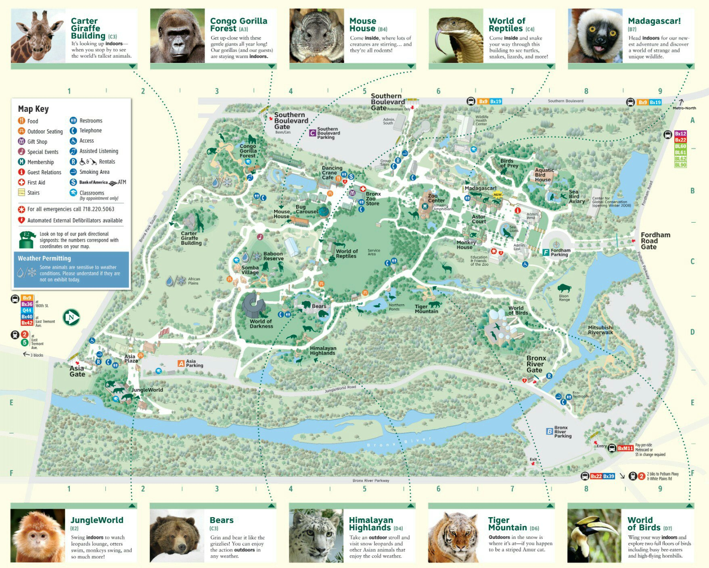

Как появился зоопарк
Участок, на котором сейчас находится зоопарк, был выкуплен властями города Нью-Йорк у Фордхэмского университета в конце 19 века. Главным условием его продажи было обещание городской мэрии основать на этой территории именно зоопарк.
Есть предположение, что университет Фордхэм со своим строгим католическим укладом хотел обрести своеобразный промежуточный щит, который бы оберегал его от смога и шума надвигающегося мегаполиса. Если бы сделка не состоялась, город скорей всего поглотил бы всю эту местность. Зато теперь местные жители получили великолепный парк для отдыха.
Открылся зоопарк в 1899 году. В то время здесь было всего до восьми сотен животных, включая медведей, как черных, так и белых, а также гризли и морских львов.
Архитектура зоопарка
Уже при входе на территорию зоопарка взорам посетителей предстают кованые фигуры животных среди декоративно насаженных деревьев и растений.
Бронзовые ворота Рейни-Мемориал-Гейтс спроектированы Полом Мейншипом в стиле ар-деко и возведены в 1934 году в память о знаменитом американском фотомастере и охотнике Поле Джеймсе Рейни.
Многие строения зоопарка и архитектурные элементы отделки сохранились и по сей день. Например, бассейн, в котором живут морские львы, не претерпел никаких изменений. Вместе с декорированными в стиле боз-ар павильонами, скульптурной лепниной в виде диких зверей и ягуаров, фонтаном Рокфеллера и массивным гранитным валуном розовой породы.
Развлечения в Бронксском зоопарке
Здесь столько видов развлечений, что не всегда получается все попробовать за один день. Поэтому многие любят сюда возвращаться не один раз.
Маршрут поездки «Дикая Азия», проходящий в вагончиках по монорельсовой дороге, позволит полюбоваться на диких животных в природной среде, которая максимально приближена к естественной. Стоит взять с собой бинокль, он обязательно пригодится на этой экскурсии.
Взору посетителя предстают слоны с длинными хоботами, обливающиеся водой, валяющиеся в грязи носороги, лежащие на ветках деревьев красные панды, скачущие по солнечным холмам антилопы и белые цапли, рыбачащие в камышах Бронкс-Ривер.
Многообразие мира обезьян раскрывается в «горилловом лесу», где можно увидеть не только горилл, но и шимпанзе, и карликовых мартышек.
На «тигровой горе» есть возможность полюбоваться собственными глазами на величественных амурских тигров.
Сектор «Мадагаскар» порадует обилием видов лемуров, крокодилов, гекконов и интересных насекомых.
Дети с восторгом катаются на «карусели жуков», наблюдают колонии морских птиц, сад с коллекцией живых бабочек и посещают «детский зоопарк», где учат, как вести себя подобно животным.
Перемещение по зоопарку
Местный парковый транспорт − мини-паровоз и канатная дорога помогут переместиться в нужный участок зоопарка.
Любители катания на животных могут за отдельную плату оседлать верблюда и проехаться на нем по окрестностям парка.
На осмотр всех животных и достопримечательностей зоопарка стоит выделить целый день. Атмосфера живой природы и наблюдение за удивительными повадками братьев наших меньших гарантирует каждому посетителю огромное удовольствие от посещения Нью-Йоркского зоопарка.
Меню
О проекте
Данный сайт написан в рамках лабораторной работы по курсу WEB-дизайн
Все работы автора
Контакты автора:
Самойленко Олеся
г. Харьков
Тел.: +38(066)27-063-27
E-mail: dilfa@ukr.net